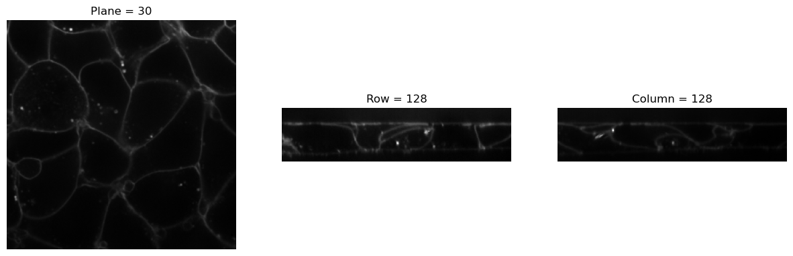
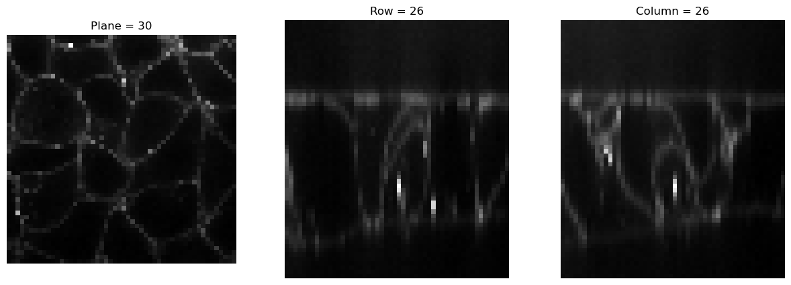
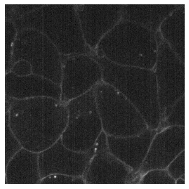

from bioMONAI.core import cells3d, img2Tensor
from bioMONAI.visualize import visualize_slicesTransforms
Data transformations and augmentations for 2D and 3D BioImages
Sampling
Resample
Resample (sampling, **kwargs)
A subclass of Spacing that handles image resampling based on specified sampling factors or voxel dimensions.
The Resample class inherits from Spacing and provides a flexible way to adjust the spacing (voxel size) of images by specifying either a sampling factor or explicitly providing new voxel dimensions.
Args: sampling (int, optional): Sampling factor for isotropic resampling. Default is 1, indicating no change in resolution. **kwargs: Additional keyword arguments that can include ‘pixdim’ to specify custom voxel dimensions.
Attributes: pixdim (list or tuple): The voxel dimensions of the image after resampling. If not provided during initialization, this will be determined based on the sampling factor and original image properties.
Methods: None
Example Usage: # Creating a Resample object with a specified sampling factor resampler = Resample(sampling=2)
# Creating a Resample object with custom voxel dimensions
resampler = Resample(**kwargs={'pixdim': [1.5, 1.5, 3]})img = cells3d()[:,0]
visualize_slices(img, showlines=False)
img2 = Resample(5)(img2Tensor(img))
visualize_slices(img2, showlines=False)

Noise
RandCameraNoise
RandCameraNoise (input_image, qe=0.7, gain=2, exp_time=0.1, dark_current=0.06, readout=2.5, bitdepth=16, offset=100, seed=42, simulation=False, camera='cmos', gain_variance=0.1, offset_variance=5)
Simulates camera noise by adding Poisson shot noise, dark current noise, and optionally CMOS fixed pattern noise.
Args: input_image (numpy.ndarray): The original image as a NumPy array. qe (float, optional): Quantum efficiency of the camera (0 to 1). Default is 0.7. gain (float or numpy.ndarray, optional): Camera gain factor. If an array, it should be broadcastable with input_image shape. Default is 2. exp_time (float, optional): Exposure time in seconds. Default is 0.1. dark_current (float, optional): Dark current per pixel in electrons/second. Default is 0.06. readout (float, optional): Readout noise standard deviation in electrons. Default is 2.5. bitdepth (int, optional): Bit depth of the camera output. Default is 16. offset (int or float, optional): Offset value to add to each pixel after conversion to ADU. Default is 100. seed (int, optional): Seed for random number generator for reproducibility. Default is 42. simulation (bool, optional): If True, assumes input_image is already in units of photons and does not convert from electrons. Default is False. camera (str, optional): Specifies the type of camera (‘cmos’ or any other). Used to add CMOS fixed pattern noise if ‘cmos’ is specified. Default is ‘cmos’. gain_variance (float, optional): Variance for the gain noise in CMOS cameras. Only applicable if camera type is ‘cmos’. Default is 0.1. offset_variance (float, optional): Variance for the offset noise in CMOS cameras. Only applicable if camera type is ‘cmos’. Default is 5.
Returns: numpy.ndarray: The noisy image as a NumPy array with dimensions of input_image.
from bioMONAI.visualize import plot_imageplot_image(RandCameraNoise(.01*img[30], camera = 'cmos'))
plot_image(RandCameraNoise(.01*img[30], camera = 'ccd'))

Normalization
ScaleIntensityRange
ScaleIntensityRange (x, mi, ma, eps=1e-20, dtype=<class 'numpy.float32'>)
ScaleIntensityPercentiles
ScaleIntensityPercentiles (x, pmin=3, pmax=99.8, axis=None, eps=1e-20, dtype=<class 'numpy.float32'>)
Percentile-based image normalization.
Data Augmentation
Utilities
# # Define a random tensor
# orig_size = (10, 8)
# rand_tensor = torch.rand(3, *orig_size) # Random tensor with shape (3, 10, 8)
# # Specify the desired size and top-left corner for cropping
# size = (12, 9)
# tl = (2, 3)
# # Perform cropping
# result_tensor = crop_pad_tensor(rand_tensor, size, tl, orig_size)
# print("Original tensor shape:", rand_tensor.shape)
# print("Cropped tensor shape:", result_tensor.shape)# Define a random tensor
orig_size = (10, 8)
rand_tensor = torch.rand(3, *orig_size) # Random tensor with shape (3, 10, 8)
test_eq((3,)*3,_process_sz(3,ndim=3))
test_eq(orig_size,_get_sz((rand_tensor, rand_tensor)))Random Transforms
RandCrop2D
RandCrop2D (size:int|tuple, lazy=False, **kwargs)
Randomly crop an image to size
| Type | Default | Details | |
|---|---|---|---|
| size | int | tuple | Size to crop to, duplicated if one value is specified | |
| lazy | bool | False | a flag to indicate whether this transform should execute lazily or not. Defaults to False |
| kwargs |
RandCropND
RandCropND (size:int|tuple, lazy=False, **kwargs)
Randomly crops an ND image to a specified size.
This transform randomly crops an ND image to a specified size during training and performs a center crop during validation. It supports both 2D and 3D images and videos, assuming the first dimension is the batch dimension.
Args: size (int or tuple): The size to crop the image to. this can have any number of dimensions. If a single value is provided, it will be duplicated for each spatial dimension, up to a maximum of 3 dimensions. **kwargs: Additional keyword arguments to be passed to the parent class.
| Type | Default | Details | |
|---|---|---|---|
| size | int | tuple | Size to crop to, duplicated if one value is specified | |
| lazy | bool | False | a flag to indicate whether this transform should execute lazily or not. Defaults to False |
| kwargs |
# Define a random tensor
orig_size = (65, 65)
rand_tensor = torch.rand(8, *orig_size)
for i in range(100):
test_eq((8,64,64),RandCropND((64,64))(rand_tensor).shape)RandCropND_T
RandCropND_T (size:int|tuple, threshold:float, max_count=5, lazy=False, **kwargs)
Randomly crops an ND image to a specified size.
This transform randomly crops an ND image to a specified size during training and performs a center crop during validation. It supports both 2D and 3D images and videos, assuming the first dimension is the batch dimension.
Args: size (int or tuple): The size to crop the image to. this can have any number of dimensions. If a single value is provided, it will be duplicated for each spatial dimension, up to a maximum of 3 dimensions. threshold (float): The minimum average intensity threshold for the cropped patch. **kwargs: Additional keyword arguments to be passed to the parent class.
# Define a random tensor
orig_size = (65, 65)
rand_tensor = torch.rand(8, *orig_size)
for i in range(1):
tst = RandCropND_T((64,64), 1, 2)(rand_tensor)
test_eq((8,64,64),tst.shape)RandFlip
RandFlip (prob=0.1, spatial_axis=None, ndim=2, lazy=False, **kwargs)
Randomly flips an ND image over a specified axis.
| Type | Default | Details | |
|---|---|---|---|
| prob | float | 0.1 | Probability of flipping |
| spatial_axis | NoneType | None | Spatial axes along which to flip over. Default is None. The default axis=None will flip over all of the axes of the input array. |
| ndim | int | 2 | If axis is negative it counts from the last to the first axis. If axis is a tuple of ints, flipping is performed on all of the axes specified in the tuple. |
| lazy | bool | False | Flag to indicate whether this transform should execute lazily or not. Defaults to False |
| kwargs |
# Define a random tensor
orig_size = (1,4,4)
rand_tensor = torch.rand(*orig_size)
print('orig tensor: ', rand_tensor, '\n')
for i in range(3):
print(RandFlip(prob=.75, spatial_axis=None)(rand_tensor))orig tensor: tensor([[[0.8728, 0.8128, 0.0749, 0.1325],
[0.4135, 0.4166, 0.0704, 0.6041],
[0.8488, 0.3012, 0.0646, 0.7827],
[0.2372, 0.3936, 0.7666, 0.8872]]])
tensor([[[0.8728, 0.8128, 0.0749, 0.1325],
[0.4135, 0.4166, 0.0704, 0.6041],
[0.8488, 0.3012, 0.0646, 0.7827],
[0.2372, 0.3936, 0.7666, 0.8872]]])
metatensor([[[0.1325, 0.0749, 0.8128, 0.8728],
[0.6041, 0.0704, 0.4166, 0.4135],
[0.7827, 0.0646, 0.3012, 0.8488],
[0.8872, 0.7666, 0.3936, 0.2372]]])
metatensor([[[0.8872, 0.7666, 0.3936, 0.2372],
[0.7827, 0.0646, 0.3012, 0.8488],
[0.6041, 0.0704, 0.4166, 0.4135],
[0.1325, 0.0749, 0.8128, 0.8728]]])RandRot90
RandRot90 (prob=0.1, max_k=3, spatial_axes=(0, 1), ndim=2, lazy=False, **kwargs)
Randomly rotate an ND image by 90 degrees in the plane specified by axes.
| Type | Default | Details | |
|---|---|---|---|
| prob | float | 0.1 | Probability of rotating |
| max_k | int | 3 | Max number of times to rotate by 90 degrees |
| spatial_axes | tuple | (0, 1) | Spatial axes along which to rotate. Default: (0, 1), this is the first two axis in spatial dimensions. |
| ndim | int | 2 | |
| lazy | bool | False | Flag to indicate whether this transform should execute lazily or not. Defaults to False |
| kwargs |
# Define a random tensor
orig_size = (1,4,4)
rand_tensor = torch.rand(*orig_size)
print('orig tensor: ', rand_tensor, '\n')
for i in range(3):
print(RandRot90(prob=.75)(rand_tensor))orig tensor: tensor([[[0.5017, 0.8685, 0.2517, 0.5876],
[0.0879, 0.4498, 0.1788, 0.0592],
[0.7514, 0.5496, 0.9782, 0.2972],
[0.2497, 0.0176, 0.3635, 0.7886]]])
metatensor([[[0.5876, 0.0592, 0.2972, 0.7886],
[0.2517, 0.1788, 0.9782, 0.3635],
[0.8685, 0.4498, 0.5496, 0.0176],
[0.5017, 0.0879, 0.7514, 0.2497]]])
tensor([[[0.5017, 0.8685, 0.2517, 0.5876],
[0.0879, 0.4498, 0.1788, 0.0592],
[0.7514, 0.5496, 0.9782, 0.2972],
[0.2497, 0.0176, 0.3635, 0.7886]]])
metatensor([[[0.2497, 0.7514, 0.0879, 0.5017],
[0.0176, 0.5496, 0.4498, 0.8685],
[0.3635, 0.9782, 0.1788, 0.2517],
[0.7886, 0.2972, 0.0592, 0.5876]]])